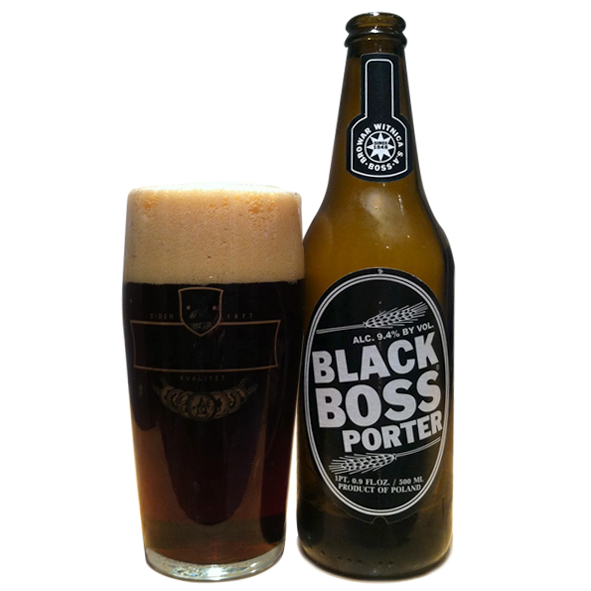

PORTER
По́ртер (англ. Porter — носильщик) — национальный английский сорт пива, объединяющий под своим именем многие подвиды, имеющие общие особенности.
Производится из не менее двух видов солодов, одним из которых является темный солод, для окрашивания пива в цвет от тёмно-коричневого до чёрного, желтого тростникового сахара, большого количества хмеля (по сравнению с другими сортами пива) и дрожжей верховых пород.More